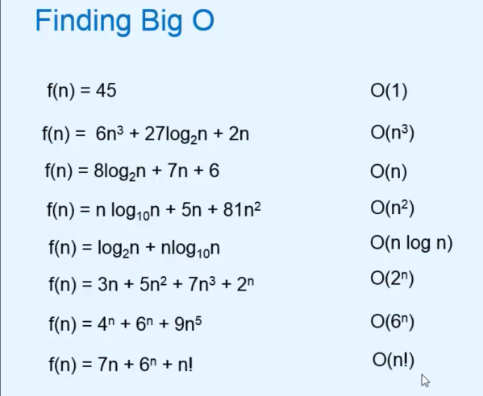

Asymptotic Notation
Asymptotic Analysis:
> How the RUNNING_TIME of an algorithm increases with the increase in INPUT_SIZE.
> To find the rate_of_growth_runnig_time of an algorithm, BIG O Notation is used.
BIG O NOTATION:
> It is the most commonly used mathematical tool to measure efficiency of an algorithm.
> Notation, f(n) → It is a function whose rate of growth we need to examine.
g(n) →It is function whose rate of growth we already know.
> Mathematically,
f(n) is O(g(n) if there exists constant c and input n0 such that
f(n) <= c*g(n) for all n > n0
which means,
f(n) cannot grow faster than function g(n) which also implies g(n) is upperBound for f(n).
f(n) is O(g(n)) becomes INFORMATIVE if when g(n) is the smallest possible function(tight_upper_bound) which satisfies the definition of Big O ( f(n) is O(g(n)) ).
* TIGHT UPPER BOUND & LOOSE UPPER BOUND

Growth rate of Known function g(n) :
So Fastest Growing term(like 3n2) is taken into consideration and other(slow growing term, constanats, coefficients) are discarded.
Note: Base of the logarithmic is not important for finding order of the function.
